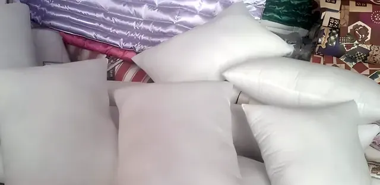
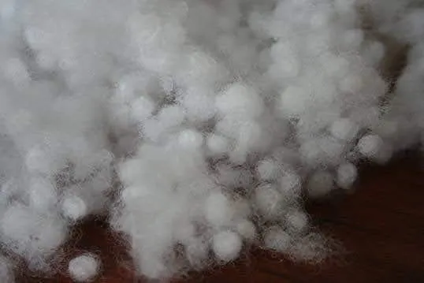
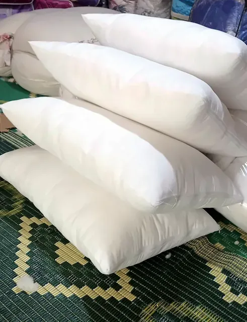
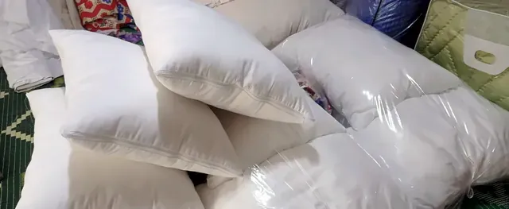

Yastık seçimi: yan, sırt ve yüzüstü yatanlar için rehber
Yastığın yüksekliği ve sertliği uyku pozisyonunuza göre seçilir. Yan, sırt ve yüzüstü yatanlar için pratik ölçüler ve dolgu önerileri.
Yastık seçerken çoğumuz dolguya bakarız: silikon mu, pamuk mu, yün mü? Oysa en önemli soru şudur: nasıl yatıyorsunuz? Yastığın görevi başınızı ve boynunuzu omurganızla aynı çizgide tutmaktır. Bunu sağlayan şey yastığın yüksekliği ve sertliğidir.
Yan yatanlar
Yan yatarken omzunuz ile başınız arasında bir boşluk oluşur. Yastık bu boşluğu doldurmalı, baş ne aşağı düşmeli ne yukarı kalkmalı.
- Yükseklik: Yüksek (omuz genişliğinize göre; geniş omuzlularda daha yüksek).
- Sertlik: Orta-sert; gece boyunca çökmemeli.
- Dolgu önerisi: Pamuk (dolgu miktarı ayarlanır) ya da dolgun bir silikon.
Avustralya'da yan yatanlarla yapılan araştırmalar (Gordon ve arkadaşları) yastık türünün sabah boyun tutulması ve uyku konforu üzerinde fark yarattığını, ama herkese uyan tek bir "en iyi yastık" olmadığını gösterdi.
Sırt üstü yatanlar
Sırt üstü yatarken boynun doğal kavisi desteklenmeli, baş öne itilmemeli.
Yüzüstü yatanlar
Yüzüstü yatmak boynu uzun süre yana çevirir. Bu kişiler için en alçak yastık en iyisidir; bazen hiç yastık kullanmamak daha rahattır.
- Yükseklik: Alçak.
- Sertlik: Yumuşak.
- Dolgu önerisi: az doldurulmuş elyaf ya da boncuk silikon (dolgu miktarı azaltılarak).
Pozisyon değiştirenler
Gece hem yan hem sırt üstü dönenler için orta yükseklikte, şekil alabilen bir yastık iyi bir uzlaşmadır. Pamuk ve yün yastıkta dükkânda dolgu miktarını size göre ayarlayabiliriz.
Yastığınızı ne zaman değiştirmelisiniz?
- Katlama testi: Silikon/elyaf yastığı ikiye katlayın. Bıraktığınızda açılmıyorsa ömrü bitmiştir.
- Topaklar, çökmüş bölgeler, sararma ve koku.
- Sabahları boynunuz sürekli tutuk uyanıyorsanız yastığın yüksekliğini sorgulayın.
- Pamuk ve yün yastıklar atılmaz; kabartılır.
Önemli not: "ortopedik" yastık
Piyasada "ortopedik", "boyun fıtığına iyi gelir" gibi ifadeler sık görülür. Biz böyle bir vaatte bulunmuyoruz: yastık bir konfor ürünüdür, tedavi aracı değildir. Boyun ya da bel ağrınız, uyuşma, karıncalanma varsa önce bir hekime veya fizik tedavi uzmanına danışın; size uygun yükseklik ve pozisyon konusunda en doğru öneriyi onlar verir.
Sorunuz mu var?
Yatağınızın ölçüsünü, odanızın ne kadar sıcak olduğunu ya da yorganınızın fotoğrafını gönderin; Ramazan usta önerisini söylesin.
Sık sorulan sorular
Yan yatanlar için hangi yastık?
Omuz ile baş arasındaki boşluğu dolduran, yüksek ve orta-sert bir yastık. Pamuk ya da dolgun silikon iyi seçeneklerdir.
Boyun ağrısı için hangi yastık iyi?
Tek bir doğru yastık yok; önemli olan başın omurga hizasında kalması. Ağrınız sürüyorsa hekime ya da fizik tedavi uzmanına danışın.
Yastık kaç yılda bir değişmeli?
Silikon ve elyaf yastık katlama testini geçemiyorsa değişmeli. Pamuk ve yün yastık kabartılarak yenilenir.
Yazıda geçen ürünler

En çok satılan yastık: fermuarlı, istediğiniz kalınlıkta doldurulur; makinede yıkanabilir.

Top top silikon elyaf: kabartınca eski hâline döner, topaklanmaz, yıkanır.


Kaynaklar
- Gordon S.J., Grimmer-Somers K., Trott P. (2009). Pillow use: the behavior of cervical pain, sleep quality and pillow comfort in side sleepers. Manual Therapy, 14(6), 671–678.
- Gordon S.J., Grimmer-Somers K.A., Trott P.H. (2010). Journal of Pain Research, 3, 137–145.
Bu yazı genel bilgilendirme amaçlıdır; tıbbi tavsiye değildir. Sağlıkla ilgili şikâyetleriniz için hekiminize danışın.